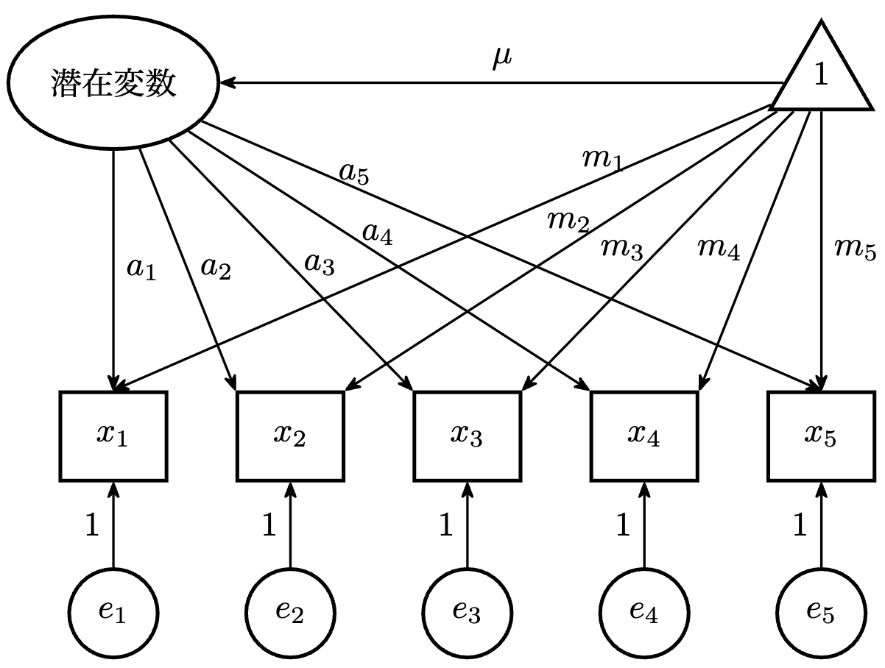

多母集団同時解析
複数グループの比較
ここでは集団間の違いを検討する平均共分散構造分析を扱います。 潜在変数に平均を導入する際には，これまでと異なり 観測変数の切片（独立変数の場合には平均）もモデルに組み込む必要があります。
平均共分散構造分析のパス図の例は，以下の通りです。

変数から定数項へのトレーシングルールとして，以下が追加されます。
- 辿れるのは単方向矢印のみ
- 矢印の逆行しかできない
例えば，上図の\(x_1\)の平均\(\bar{x}_1\)は以下の通りです。 \[ \bar{x}_1 = a_1 \times \mu + m_1 \]
観測変数の平均が，\(a_1 \times \mu\)という潜在変数による成分（平均）と\(x_1\)独自の成分（切片）で表され，構造化されていることがわかります。
測定の不変性
母集団の比較では，集団間の同質性についていくつかのレベルで考えます。
- 配置不変
- 弱い測定不変
- 強い測定不変
- 厳格な測定不変
配置不変は最も基本となるレベルです。異なる集団で少なくとも同じモデル（変数間の構造）が成り立っている状況です。 パス係数などが等しいかどうかは問いません。
測定不変は集団間の観測変数の母数に関して， どこまで等しいといえるかでレベルが異なります。
弱い測定不変は，潜在変数の分散は異なるが，潜在変数からの負荷量が集団間で等しいといえる状況です。 潜在変数の分散と共分散の比較を可能とします。
強い測定不変は，観測変数の切片も等しい，とするものです。観測変数で揃えることで，潜在変数の平均，分散，共分散が異なるかどうかを検討可能になります。 この段階で，潜在変数間に違いがみられるのであれば， それは観測変数による測定の違いではなく，潜在変数の分布に 本質的な違いがあるといえます。
厳格な測定不変は，観測変数の誤差分散が集団間で等しい，というものです。潜在変数をモデル比較する上では，通常要求されない水準の不変性です。
部分的な不変性
すべての観測変数については不変性を示せない場合， 適合度の観点から，いずれの観測変数に不変性が想定できないか 特定（それ以外は成り立っていることを確認）します。 その上で，以下のような可能性を検討します。
- 潜在変数の比較の土台は十分であることを示しつつ，当該観測変数の等値制約は外す。
- 違いはわずかであることを確認し，等値制約はそのままにする
- 当該観測変数を分析から除外し，再推定する。
- 集団間で異なる構成概念を測定しているものとして結論づける。
実践的には，1や2の観点から部分的な不変性のもとで検討を進めます。
不変性の検討
\(\chi^2\)統計量の変化について検定を行うものがありますが，サンプルサイズの影響などから，実施されても結果を重視しない傾向があります。
自らの仮説をベースに，それぞれのモデルの適合度指標を検討し， 「より良い」というよりは，実質科学的に「認めうる」不変性を示しつつ，潜在変数の集団間の比較検討を行うこととなります。
適合度指標には，CFIやRMSEA，AIC/BICなどを利用します。